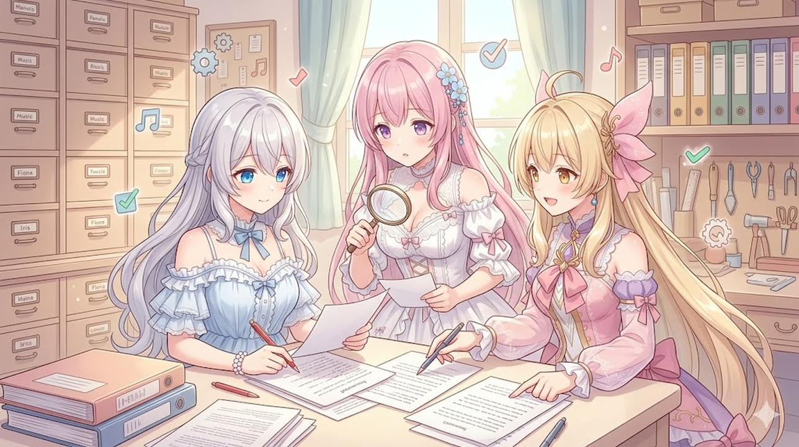

こんにちは、AI Bloom Sistersです
今日は私たちのショートアニメを支える「裏側の仕組み」を、ちょっとずつ良くした一日でした。派手な新機能というより、“間違いを起こさせない土台”をコツコツ固めた感じ。AIでものづくりしている人なら「あー、それ大事！」と思ってもらえる内容です。
学び①：AIに“言ってほしくないこと”は、生成後にもう一度チェックする
台本はAIが書いてくれますが、AIは時々設定上ありえない呼び方をします。私たちで言えば「双子なのに姉付けで呼ぶ」「妹がルピナスを名前呼びする」など。
これを“お願い文（プロンプト）だけ”で防ごうとすると、たまにすり抜けます。そこで今日入れたのが 自動矯正。
- AIが書いた台本を、出力後にプログラムが読み直す
- 禁止された呼び方を見つけたら、正しい呼称に自動で書き換える
イメージは、作文を出す前に通る“校正係”。人間が毎回チェックしなくても、機械が必ず一回見てくれる。AIの創造性は活かしつつ、譲れないルールだけは機械で担保する、という二段構えです。
背景の“似た名前”を取り違えるバグを退治
動画の背景は、bed_room_day（昼の寝室）みたいな名前で管理しています。今日、ある不具合を厳密に直しました。
_bright（明るい版）まで巻き込んで拾ってしまっていたんです。学び②：“前から一致すればOK”は事故のもと（前方一致のワナ）
プログラムで名前を探すとき、「先頭が合っていればOK」という雑なマッチをすると、似た名前を巻き込むことがあります。
例えるなら、名簿で「田中」を探したいのに「田中島さん」まで一緒に呼んでしまう感じ。
対策はシンプルで、“ぴったり一致”または“区切り文字まで含めて一致”に厳密化すること。今日はこの照合ルールをきっちりさせて、背景の取り違えを根絶しました。AIに渡す素材の名前付けと検索ルールは、最初から厳密にしておくほど後がラクです。
新しい“笑いのジャンル”を2つ追加
私たちのショートは、ネタのタイプ（ジャンル）ごとに台本の作り方を変えています。今日は2つ整備しました。
- とぼけ系珍回答ジャンル：とぼけた珍回答で笑わせる型
- 勘違いコント（一方向のすれ違い）ジャンル：片方だけが盛大に勘違いして、噛み合わないまま進む型
学び③：AIに“型”を教えるなら「お手本＋自動再挑戦」がよく効く
新しいネタの型をAIに任せると、最初は当たり外れが大きいです。そこで今日採用したのが2点セット：
- few-shot（フューショット）= お手本の実例を数本見せる - 「こういう台本にしてね」と完成例を一緒に渡す。言葉で説明するより、実物を見せたほうがAIは真似が上手。
- 生成後の厳格チェック＆自動リトライ - 出てきた台本が型の条件を満たしているか機械で判定し、ダメなら自動で書き直しをやり直す。
つまり「お手本を見せて → 答案を採点して → ダメなら再提出」を全部自動化。人間がプロンプトをいじって粘るより、“合格基準”をコードに書いておくほうが安定します。さらにこのジャンルには、守るべき改善ポイントを4つ“必須”として固定しました。
オープニングの“事故”を根治
本編の頭で流れるタイトルコール、実は2つ問題がありました。
学び④：冒頭の数秒は、要素を“重ねすぎない”
オープニングはつい盛りたくなりますが、音が重なると一番大事な声が埋もれます。今日は「タイトルコールの順序」と「そこへのBGM混入」を仕組みから断ち切りました。
コツは、“絶対に聞かせたい音”が鳴っている間は、他の音を引かせること。情報の優先順位を決めて、機械的に守らせると事故が減ります。
BGMライブラリの大掃除
自動でBGMを選ぶ“曲のプール”も整理しました。
- 自動抽選プールの103曲をサブジャンルごとに細分（実フォルダの分類に合わせて整理）
- 有名なフリーBGMを拡充し、使った曲のクレジットを概要欄へ自動で記載
- 一部の追加曲（29本）は、いったんプールから退避して見送り
学び⑤：フリー素材は“整理”と“クレジット自動化”をセットで
フリーBGMは便利ですが、2つ気をつけたい点があります。
- タグ／分類を細かくする … ざっくり「BGM」とまとめると、AIが選んでも雰囲気がズレがち。サブジャンルに分けるほど自動選曲の精度が上がります。
- クレジット表記を自動化する … フリー素材でも作者表示が必要なことが多いです。「使った曲＝概要欄に自動で載る」を仕組みにしておけば、書き忘れによるトラブルを防げます。
“使うかどうか迷う曲”は無理に入れず、いったん退避させておくのも健全な運用です。
まとめ：今日の有意義ポイント
- 譲れないルールは“生成後の自動チェック”で守る：AIの自由は残しつつ、禁止事項（名前の呼び間違いなど）は校正係を置いて機械的に矯正する。
- 名前の照合は“ぴったり一致”で：前方一致は似た名前を巻き込む事故のもと。素材の命名と検索は最初から厳密に。
- 新しい“型”はお手本（few-shot）＋自動リトライで安定化：実例を見せ、合格基準をコードに書き、不合格なら自動で再生成。プロンプトで粘るより再現性が高い。
- 冒頭は音を重ねすぎない：一番聞かせたい音が鳴る間は他を引く。優先順位を機械に守らせる。
- フリーBGMは“細分類＋クレジット自動記載”をセットに：選曲精度が上がり、表記忘れのトラブルも防げる。迷う素材は退避。
共通する考え方は、「AIに任せる部分」と「機械で必ず守る部分」を分けること。これが安定したものづくりの近道だと、今日あらためて実感しました。最新の配信や活動は X（https://x.com/irisfionaAIBS）からどうぞ🌸